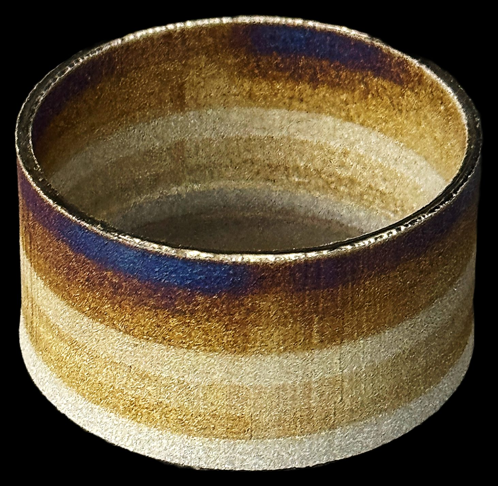
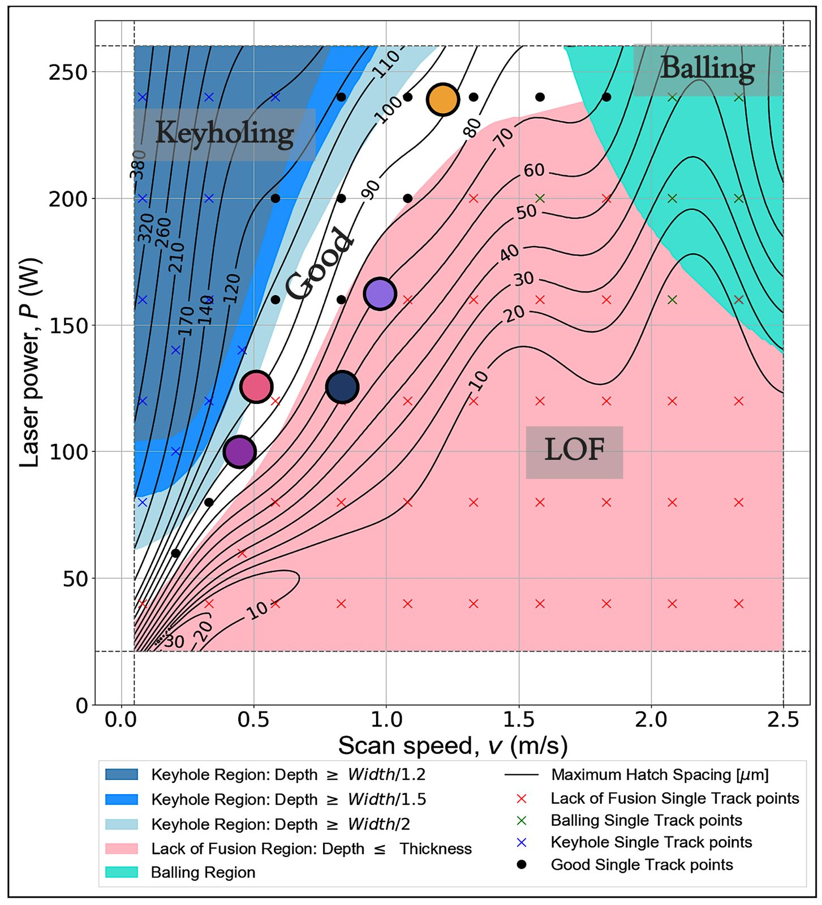
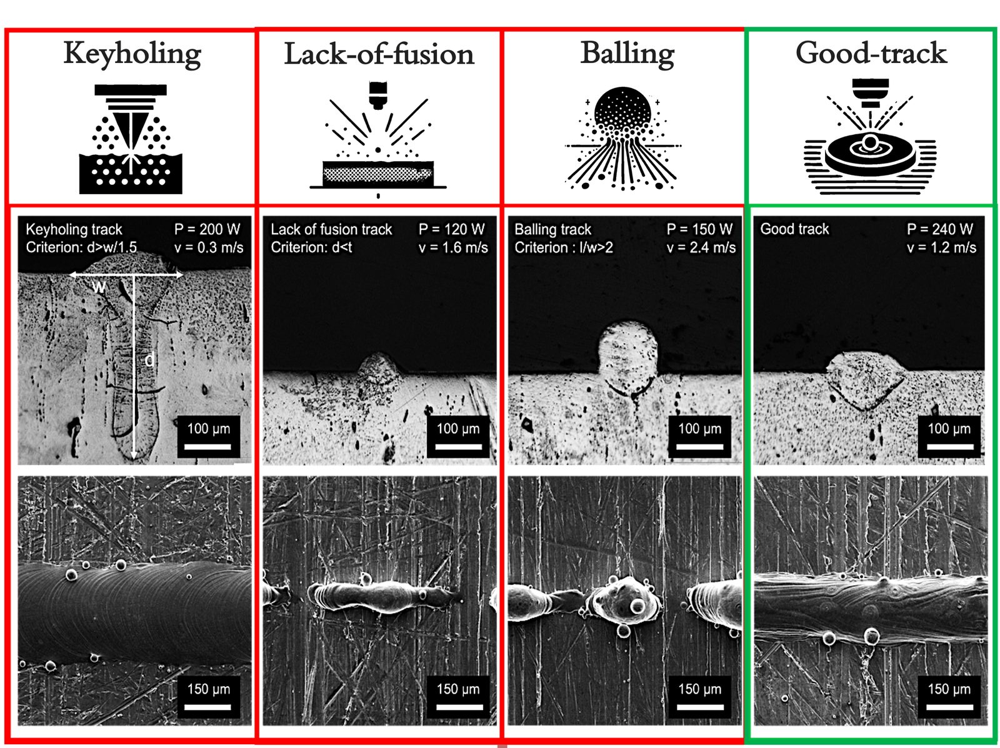

Work / Project 1 of 5
Beyond one material per function
Functionally graded NiTi and NiTiHf, printed so one part carries different transformation behaviour in different regions. The demonstration is a hand whose fingers close in sequence as the water warms.
- Alloy
- Graded NiTi and NiTiHf
- Machine
- 3D Systems ProX 200
- Methods
- LPBF, DSC, EBSD
- My role
- Co-first author
- Published
- Additive Manufacturing, 2026

Conventional design assigns one material per function. Something stiff here, something compliant there, and a joint in between to hold them together. Joints are where parts fail. Functionally graded additive manufacturing removes the joint by changing composition continuously through the build, so the transition is metallurgical rather than mechanical.
The work established printability maps for graded NiTi-based systems on a 3D Systems ProX 200: where in the power, velocity and composition space you can build defect free, and where the grade itself introduces cracking that neither end member shows alone. DSC across the gradient gave the transformation temperatures actually achieved. EBSD gave the grain morphology and texture behind them.
The result is a part with designed, position-dependent actuation. The hand above is the demonstration: one printed piece, several transformation temperatures, and fingers that close in sequence as the water warms rather than all at once.

